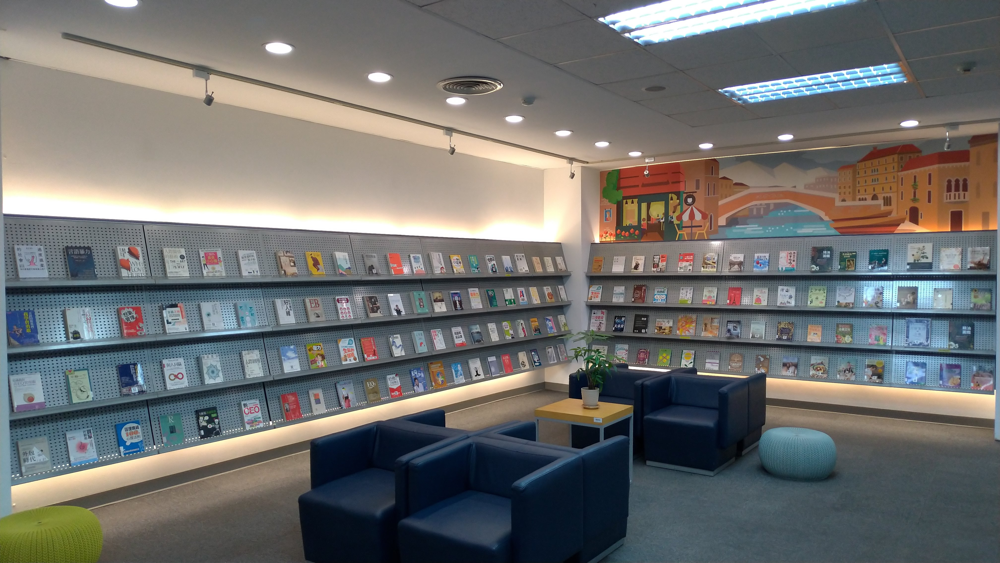

第三站：新書展示區．24小時還書箱
這裡是書籍新鮮出爐的地方。新書展示架上，最新出版的書籍一經上架即可外借。
區內配有舒適沙發座椅，經常可見同學們坐在這裡沉浸書海，忘卻時間。
圖書借閱到期後，除了親自至櫃檯歸還，圖書館大門右側也設有24小時還書箱，即便在非開館時間，也能方便又即時地完成還書。
這裡是書籍新鮮出爐的地方。新書展示架上，最新出版的書籍一經上架即可外借。
區內配有舒適沙發座椅，經常可見同學們坐在這裡沉浸書海，忘卻時間。
圖書借閱到期後，除了親自至櫃檯歸還，圖書館大門右側也設有24小時還書箱，即便在非開館時間，也能方便又即時地完成還書。